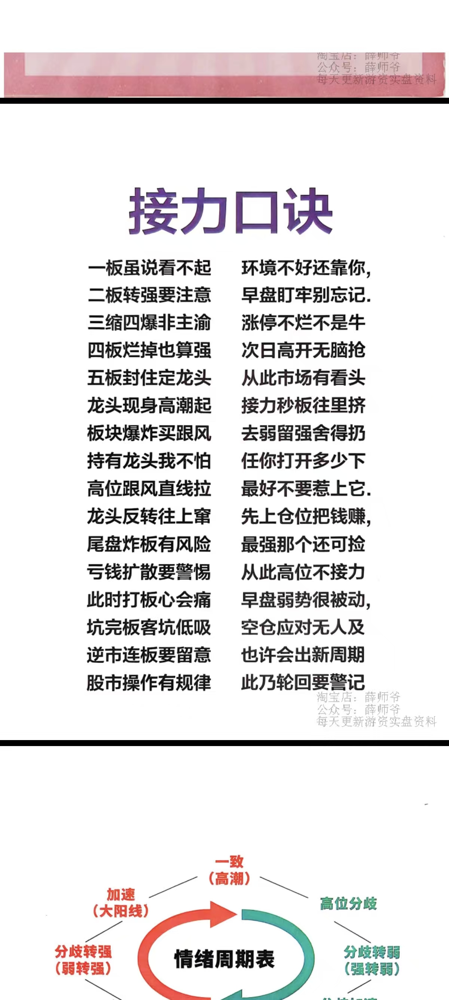

Research Review Desk
资料库 - 龙头周期复盘
从 Notion 页面“龙头周期复盘”提取 toggle heading1 内容，按周期单独成章。 已排除 Seedance 超小周期，当前先做清爽、可持续迭代的第一版页面。
Cycle 05-06 · 龙头接力复盘
哈药股份 + 立新能源：接力口诀与双周期5分K标注
这一组放在05-06周期前面：先用“接力口诀”锁住纪律，再进入哈药股份与立新能源的完整5分钟K复盘。 核心是看旧龙退潮、新龙承接、爆量回封、次日转强、前排负反馈和高位断板。
